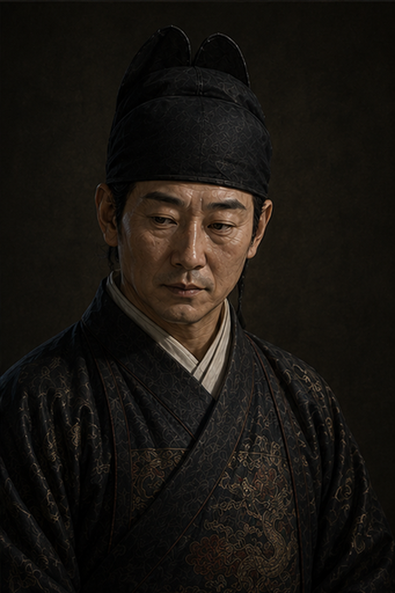

召对：杨嗣昌
户部郎中 · 越次召对崇祯登极方一月，太仓只剩三百二十万两，新君威信未立。他越过满朝公卿，点名召见了一个五品户部郎中。司礼监随堂、信邸旧人王承恩侍立御座一侧。
宣杨嗣昌。
臣户部郎中杨嗣昌，叩见皇爷。皇爷越次召臣这小小郎中，臣惶恐，唯有知无不言。
臣斗胆先奏一句：皇爷新定关宁月饷八十万、内外库各半，这魄力，臣佩服。只是——太仓眼下实存不足三百万，月入不过一百五六十万，养九边、百官、宗禄已是寅吃卯粮。这八十万若月月照发，不出半年，太仓与内库俱要见底。
臣不敢说旨意不行，只敢说：光靠「挪」，挪不长久，终须开源。盐课为豪商把持、江南清丈历年未行——此二处但凡动得一处，岁可增银数百万。臣……不知当讲不当讲。

王承恩 欠身，凑近御座低声皇爷，这郎中不过五品，却敢当面奏一句「半年见底」，还一指就点中盐课、江南清丈——这两处，是本朝积年动不得的死结，谁动谁得罪天下豪商士绅，可不动，便是坐等库竭。满朝公卿避之唯恐不及，他敢说。这人，奴婢替皇爷记下了。
盐课、清丈，怎么动？
回皇爷。这两刀，盐课易动、清丈难啃，须分先后。
盐课——病在两淮。纲商世袭窝本、把持盐引，每年积引壅塞、浮费层层盘剥，朝廷十成盐利到不了三成。皇爷若动，先从清积引、缉私盐、核纲商浮费入手，不必骤改盐法，半年内两淮岁课可增二三百万。只是……盐商背后多有勋贵、内臣照应——（他眼神一闪，不敢明指）——须皇爷择一强项御史巡盐，撑得住那些说情的条子。
清丈——这是动士绅的命根。投献、诡寄、隐田遍天下；张居正清丈一回，人一亡便政息。臣劝皇爷切莫一刀切全国，树敌太多、反噬更烈。不如先择一省试点——畿辅天子脚下好弹压，或江南隐田最多——以考成法督责地方官，按实亩征赋，见了成效再图推广。然此事非三五年不见功，须皇爷始终撑腰，臣方敢说有望。
臣人微言轻，不敢妄请专任；唯愿为皇爷查档、拟一条陈，备裁择。
皇爷留心——他没怂恿您一刀切全国，反劝您先试点、以考成法徐徐督责。这是懂轻重的话。张江陵清丈，正是人一亡便政息；他劝皇爷「始终撑腰」，是把难处先说在了前头。
那你觉得，谁才是撑得住那些说情条子的人？
皇爷问到了点子上。巡盐这差，才不才在其次，硬不硬是头一条。寻常御史一到扬州，盐商的程仪、勋贵的条子、内臣的招呼一齐压来，十个有九个先软了腰。要撑得住，得用与盐商勋贵无半点瓜葛的寒门硬骨头，还得皇爷亲点钦差、绕开都察院——崔呈秀把着左都御史那关，走常规派谁都过不去。
臣斗胆举三人：一是袁可立，前登莱巡抚，刚正廉能、办过实务，惜罢居睢州，须皇爷起复；二是翰林倪元璐、黄道周之辈，清望素著、敢撄权贵之锋，破格授个巡盐御史、赐钦差关防，正好借皇爷天威压住扬州。
只是……（他顿了顿）这几位皆东林清流。起复重用他们去砍盐课，阉党那边……必有话说。皇爷须先掂量：是借这把刀整盐课，还是暂且不惊动那位九千岁。
皇爷，杨郎中那句没敢说尽，奴婢替他说完——袁可立罢居睢州，要起复才动得了，跟袁崇焕、徐光启一样，得些时日；倪、黄二位倒是现成，一道钦差关防即可。可这三位，都是东林。皇爷起复他们去砍盐课，断的正是盐商背后那些勋贵、内臣的财源。这一刀亮出来，便是当着九千岁的面亮的。是先手布局，还是惊动得太早……奴婢多嘴了。
让倪元璐、黄道周两人，分别督办两件事。你觉得何如？
皇爷这一手……大胆。两人分督，火力是足了。只是臣方才说「分先后」，正为这个——两线齐发，就是同时开罪盐商勋贵与天下士绅：一边砍钱袋、一边掘祖坟，反扑要加倍。皇爷皇威方立，怕压不匀。
再者，倪、黄二公清望盖世、骨头够硬，撄权贵之锋绝无问题；可盐课要盘积引、缉私枭，清丈要丈田亩、查诡寄，俱是琐碎实务——此二公是诤臣文胆，未必是案牍干吏。臣斗胆补一句：清流挂帅压阵，须配懂行的属员盘账丈田，否则恐「敢任而不能竟」。
若论分派：盐课盘账繁细，倪公心思缜密，或更相宜；清丈要硬压士绅，黄公骨鲠震慑，或更压得住。若皇爷执意并举，臣愿在户部替二公接应钱粮、调拨干吏，账目臣替皇爷盯着。只是——皇爷须有把两边都得罪、还撑得住的决心。
皇爷……这一个月，您已起复袁崇焕、月补八十万边饷，又召徐光启入直历局；如今再开盐课、清丈两线。奴婢斗胆——届时这些反扑，怕要一齐找上门来。
那就让两人先试点清丈，畿辅天子脚下好弹压，后面找机会再两路并进。
臣遵旨，臣即在户部查档拟条陈，先以畿辅清丈为试点，接应倪、黄二公所需钱粮干吏，备皇爷裁夺。
这一年杨嗣昌三十几岁，一个无人在意的五品郎中。十余年后，他官至兵部尚书、督师天下，以「四正六隅、十面张网」总揽剿寇全局——崇祯最倚重、也最争议的那柄刀。而第一次照见他锋芒的，是登极方一月的少年天子，在乾清宫，越次的一召。